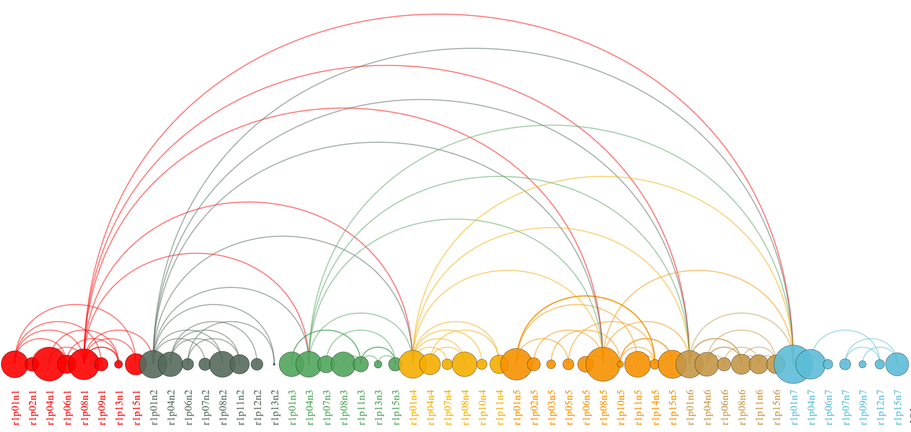

Machine Learning
2021/10/10
An outlier detection strategy for spatial free path-finding based on hierarchical ant colonies
Outlier Detection (OD) is of great significance and widely used in various industries. It can...